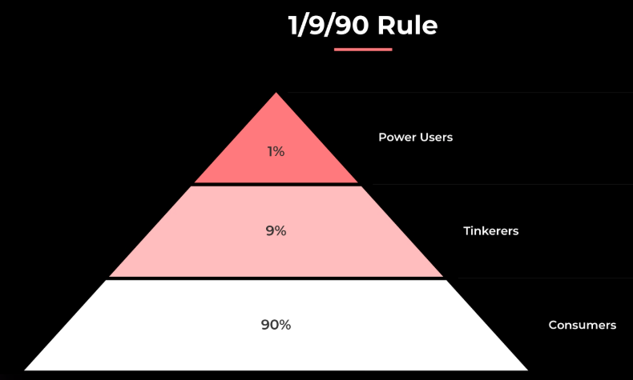

OReilly/Event/25/09/AI Codecon/1255 Beyond Code Generation Getting Real Work Done with AI Agents Angie Jones
Beyond Code Generation: Getting Real Work Done with AI Agents – Person/Angie Jones
Overview
- Duration: 15 minutes
- Time: 12:55
- Speaker: Person/Angie Jones
- Event: OReilly/Event/25/09/AI Codecon
- Resources: PDF
Description
Key Topics
My Notes
- 13:09 one of the key things here is "am I getting value from AI?"
- 13:11 the 1/9/90 rule
- 1% Power Users – These are the early adopters and experts who push AI tools to their limits, often creating workflows and best practices.
- 9% Tinkerers – They experiment with AI, trying out features, but without deep or consistent usage.
- 90% Consumers – The vast majority, who mainly consume outputs from AI tools rather than driving or shaping how they are used

- 13:13 it's really hard to make repo integration
- 13:16 Angie's trying to give us a blueprint or a mission for how to think about making repo-centric AI integration on teams as a way to
Levels of AI Maturity AI Notes
1. AI-Curious
2. AI-Ready
3. AI-Embedded
- AI can be trusted and share responsibility.
- Guardrails are strong enough that AI contributions can be merged confidently.
- AI is treated as a teammate with responsibilities.
- Autonomous agents are integrated into workflows and may run simultaneously (e.g., handling maintenance, integrating with CI/CD).
- AI shifts from helper to co-owner of work
- 👉 The progression shows a journey from exploring AI tools, to actively incorporating them, to embedding them as reliable team members.
AI Maturity Model AI Notes
- She ties the AI Maturity Model (AI-Curious → AI-Ready → AI-Embedded) to a leveling-up framework for individual AI agents inside a team’s workflow.
- Each agent (like the Local AI Helper, PR Assistant, CI Helper, Quality Guardian, or Ops Navigator) has clear progression stages:
- Novice → first adoption, simple use (e.g., add one gating check).
- Adept → tuned to the repo/team’s pain points, with repeatable workflows.
- Artisan → fully embedded, measured, and delivering tracked value (e.g., publishing metrics, catching errors, or speeding PR merges).
This “game-like” progression, shown in her Repo Quest framework (slides 13–21), helps teams assess where they are and set concrete goals for maturing AI use. It shifts the maturity discussion from abstract stages to measurable practices and outcomes
Idea - put HowToAI.md in the repo
- 👉 HowToAI.md = “How to run an AI helper locally in this repo”
- Here’s what that means in context:
- Just like a project might have a README.md to explain setup, HowToAI.md acts as a starter guide for using AI inside that specific repo.
- It provides repo-specific prompts, rules, and instructions for running local AI helpers.
- This makes AI usage repeatable and accessible across the team, so contributors don’t have to guess how to best apply agents.
- It also sets the stage for later maturity levels (like contributing workflows to shared libraries or tracking adoption).
So, HowToAI.md is a practical, concrete artifact that teams add to their repositories to embed AI usage directly into the developer workflow — a way to normalize and standardize AI assistance just like any other engineering tool.
- 👉 HowToAI.md = “How to run an AI helper locally in this repo”
Big idea is to "Think beyond the IDE"